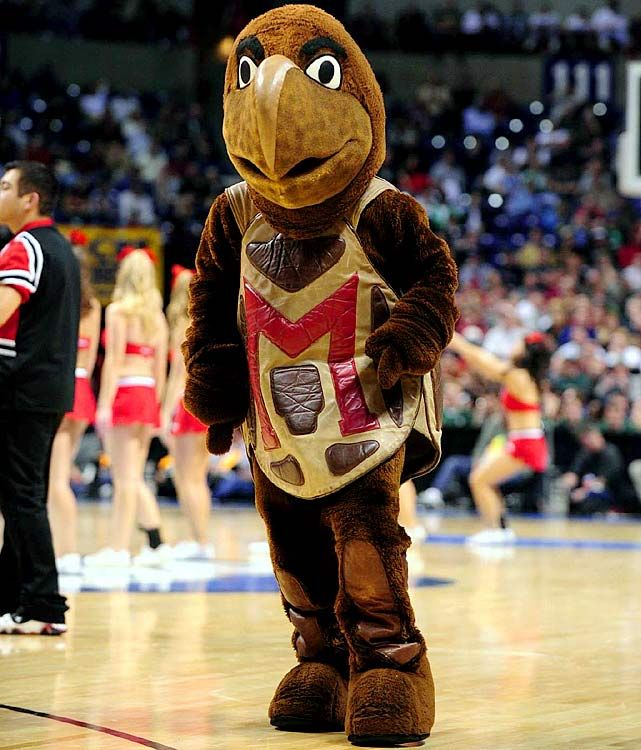

I like to spend most of my time cheering on my school!
Favorite Spots on Campus
This website is a small bio about me and my favorite things to do. One of my favorite things to do is to walk around campus and see so many new faces! Below I will list all of my favorite spots to hang out and talk to students!
- Adele H. Stamp Student Union
- McKeldin Library
- Capital One Field